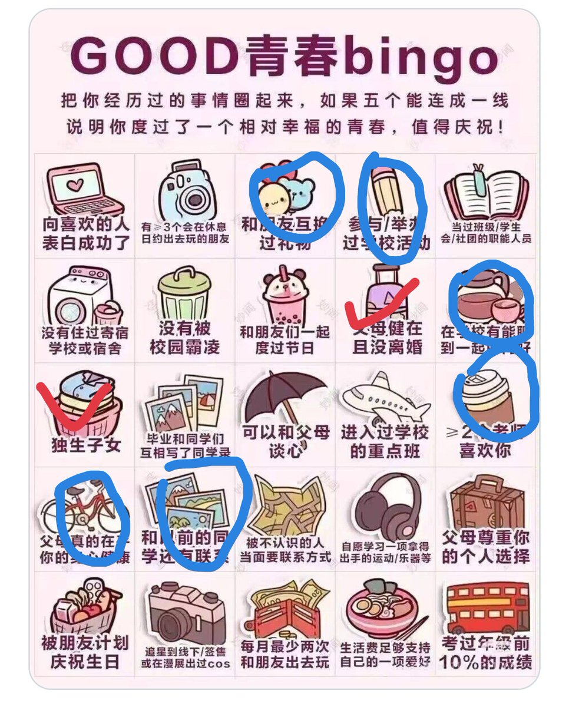

Minokakay
@Minokakay
紅色是現在有的，藍色是曾經擁有過的😿和我互換聖誕節禮物的人拋棄了我，現在學校裡沒人和我說話，所謂學校活動也是躲在樓梯間玩手機的邊緣人，在我上高中之前我成績挺好的，有老師喜歡我，但現在不一定了

周陸4ReaL
@s4tuRday_joe
我是这样的
不过那些个例可能是 青春过于幸福 所以不怕事 可能吧 事情都有两面也有两个极端 到达极端都是这样的 https://t.co/zSJ3gABROL https://t.co/jotDB9YDB6